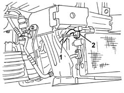
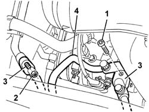
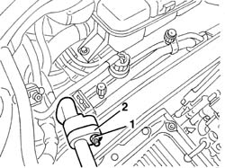
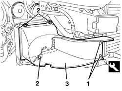
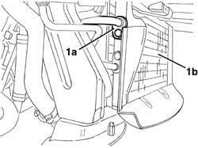
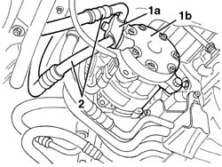

5040A50 pipe from compressor to air conditioner condenser - r+r
- Path
- Procedures > 50 AUXILIARY UNITS > 5040 AIR CONDITIONING CASING AND COMPONENTS > 5040A air conditioner coolant circuit > 5040A50 pipe from compressor to air conditioner condenser - r+r
- Kind
- repair procedure (removal / refitting; the operation number is the code)
- Applies to
- all engines; all production periods
- Interactive page
- https://sloeber94.github.io/elrnDB-a147/en/#/3025418
Applies to: all engines; all production periods
Applies to: all engines; all production periods
 Removing
Removing
 Refitting
RefittingDrain the coolant (5040A10 Air conditioning refrigerant CIRCUIT - Draining and Refilling ).
7055B54 under-engine guard - r r
1. Undo the bolt fixing the pipe to the condenser.
2. Disconnect the pipe connector.

Applies to: all engines; all production periods
1. Undo the bolt fixing the pipe to the compressor.
2. Disconnect the nut fixing the intermediate coupling.
3. Disconnect the pipe connectors.
4. Recover the pipe.

Applies to: all engines; all production periods
Refitting
RemovingCheck that the pipe is not damaged or cracked.
Reposition the pipe.
Connect the pipe connectors and tighten the bolts and the nut.
 | Fastening | Component | Ø | Value (daNm) |
|---|---|---|---|---|
- | Bolt | COOLANT SYSTEM FITTINGS | M6 | 0.9 |
| Fastening | Component | Ø | Value (daNm) |
|---|---|---|---|---|
- | Nut | COOLANT SYSTEM FITTINGS | M6 | 0.9 |
7055B54 under-engine guard - r r
Repressurize using coolant fluid (5040A10 Air conditioning refrigerant CIRCUIT - Draining and Refilling ).
Applies to: engines: 3.2 V6; all production periods
Removing
RefittingObserve the following precaution.
Drain the coolant (0010T84 coolant for air conditioning system dehydrate and recharge ).
7055B54 under-engine guard - r r
7055B64 Engine compartment DUST shield in front wheel arch (one), left or right - R.R.
7055B42 Additional FRONT WHEEL ARCH (one), left or right - R.R.
1. Undo the nut fastening the intermediate coupling for the pipe from the climate control casing to the compressor.
2. Disconnect the intermediate coupling.

Applies to: engines: 3.2 V6; all production periods
1. Working in front of the right front wheel, release the buttons retaining the air duct using the special tool.
 | Name | Country |
|---|---|---|
1 | Scraper blade | 1.823.015.000 |
2. Undo the bolts fixing the air duct.
3. Remove the air duct.

Applies to: engines: 3.2 V6; all production periods
1. Undo the bolt and disconnect the connector (1a) for the pipe from the condenser (1b).

Applies to: engines: 3.2 V6; all production periods
1. Working under the engine, undo the bolt and disconnect the connector (1a) for the pipe from the compressor (1b).
2. Remove the pipe

Applies to: engines: 3.2 V6; all production periods
Refitting
RemovingCheck that the pipe is not damaged or cracked.
Position the pipe.
Connect the pipe connectors and tighten the bolts and the nut.
| Fastening | Component | Ø | Value (daNm) |
|---|---|---|---|---|
- | Bolt | COOLANT SYSTEM FITTINGS | M6 | 0.9 |
| Fastening | Component | Ø | Value (daNm) |
|---|---|---|---|---|
- | Nut | COOLANT SYSTEM FITTINGS | M6 | 0.9 |
Fit the air duct in place and secure it using the bolts.
Engage the air duct retaining buttons.
7055B42 Additional FRONT WHEEL ARCH (one), left or right - R.R.
7055B64 Engine compartment DUST shield in front wheel arch (one), left or right - R.R.
7055B54 under-engine guard - r r
Repressurize using coolant fluid (0010T84 coolant for air conditioning system dehydrate and recharge ).
Topics linked from this page (7)
- 0010T84 coolant for air conditioning system dehydrate and recharge
- 5040 AIR CONDITIONING CASING AND COMPONENTS
- 5040A10 Air conditioning refrigerant CIRCUIT - Draining and Refilling
- 7055B42 Additional FRONT WHEEL ARCH (one), left or right - R.R.
- 7055B54 under-engine guard - r r
- 7055B64 Engine compartment DUST shield in front wheel arch (one), left or right - R.R.
- 7210E10 R.R. CENTRE PILLAR